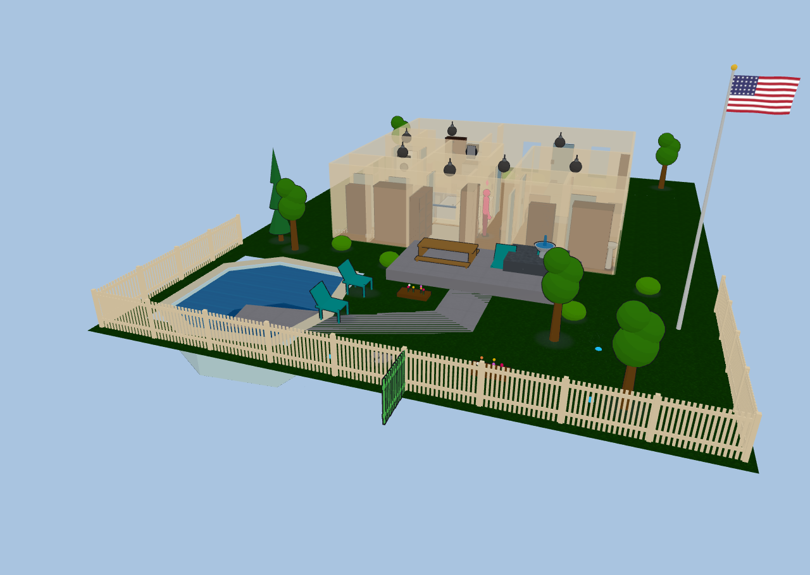

Yard & terrain#
Your plan doesn't have to stop at the walls. Diorama paints ground coverings, raises terraces, fences the property, runs paths and driveways, and fills a pool — all with the same drawing tools you use indoors, and all visible in both the 2D plan and the 3D scene.

Everything on this page rides the Ground 2D layer unless noted, so you can hide the whole yard at once — handy when a large painted area starts swallowing clicks meant for the fixtures on top of it.
Ground coverings#
The Ground tool paints polygon areas onto the ground plane. Click each corner, then double-click or press Enter to finish (Esc cancels).
Pick a covering kind from the variant chips in the toolbar, or from the area's sidebar row afterwards:
| Kind | Looks like |
|---|---|
| Grass | Mowed lawn green |
| Rock | Grey gravel / stone |
| Concrete | Pale slab |
| Blacktop | Dark asphalt |
| Mulch | Brown bark bed |
| Sand | Light sand |
| Water | Translucent water that shimmers and drifts |
Areas are ordinary polygons: select one to drag its vertices, and delete a selected vertex with the Delete key (an area never drops below three points). Ground paint is decorative — it never blocks anyone's path.
Yard fill#
Rather than tracing your whole lot by hand, set a Yard fill kind in the Floors section. It fills the entire floor rectangle except your enclosed rooms, giving you an instant lawn (or blacktop) under the house that any hand-painted area then draws on top of.
Terraces & elevation#
Any ground area can be raised. Set its elevation in the area's sidebar row and Diorama lifts the patch, builds a skirt down its edges to whatever surface sits below, and lets figures walk on top of it — a raised deck, a planting bed, a sunken patio (use a negative value).
- Soft coverings (grass, mulch, sand) get an out-flared, natural-looking bank; hard ones (rock, concrete, blacktop, water) get a vertical wall.
- Build a hill by nesting areas: a large low tier, a smaller higher tier inside it, and so on. Each tier's skirt drops to the tier beneath it.
- In 2D a raised area draws a contour ring, and the selected area shows its height as a
±N mmcaption.
Everything you put on a terrace comes up with it. Figures walk terrace tops at the right height with their shadows following them, and free-standing outdoor content — trees and yard furniture, ground lights, flagpoles, cameras, robot docks, sprinkler heads — sits on the terrace surface rather than floating at the old ground level. A chair on a sunken patio is a chair you can sit in, at patio height.
A terrace is a flat step, like a stair landing — there's no walking up a slope. To connect two levels, drop a stairs flight or a ramp between them and use ⇅ Fit between levels to size it automatically (see The 3D view).
Fences, hedges & gates#
Fences are wall kinds, so you draw them with the Wall tool and they weld, snap, and take openings exactly like interior walls. Pick the kind from the wall-kind picker (or the Structure tab's variant chips):
- Picket — rails, posts, and flat pickets, about 1.1 m tall.
- Privacy — a solid board fence, about 1.8 m tall.
- Chain-link — posts with a see-through diamond mesh.
- Hedge — a clipped green hedge, about 0.9 m tall.
All four block movement just like a solid wall, so figures walk around them and out through your gates.
Fences follow the ground, segment by segment — a run crossing a raised terrace steps up onto it, and a fence around a yard that sits a storey below the house stands on that yard rather than floating at the house's floor level. A free-standing full, half, or railing wall out in the yard does the same; walls that form part of your house stay with the house.
Gates are a door kind. Drop a door onto a fence, hedge, or railing run and it becomes a Gate automatically; you can also set the kind by hand in the Doors editor. The panel takes its styling from the wall it's cut into — pickets in a fence, a matching banister leaf in a railing — and the run really breaks around it, with proper gate posts on each side of the gap. A gate binds like any other opening — a cover. entity with a gate device class swings it open and closed, and it takes locks and doorbells too.
Paths & driveways#
The Path tool draws a ribbon instead of a polygon: click along the centerline of the walk or driveway, then double-click or press Enter to finish. Diorama buffers the line into a paved area at the width you set.
- The path's sidebar row has a width input; change it and the ribbon re-generates.
- Select a path to drag its centerline points (not the outline) — much easier to nudge than a polygon.
- Redraw path re-traces the centerline; Detach shape converts it to a plain editable polygon if you want to hand-tune the outline.
- Paths start as concrete; change the covering kind for a gravel drive or a blacktop apron.
Pools & spas#
The Pool (🏊) tool draws the water body as a polygon. Diorama builds a real recessed basin: tiled walls dropping to the floor of the pool, a coping lip around the rim, and a shimmering water surface just below it. Figures path around a pool rather than through it.
Configure it in the Pool & Spa sidebar section — name, kind (pool or spa), water color, depth, and raised height for an above-ground pool or a spill-over spa.
Bindings are deliberately flexible, because pool equipment reports in every imaginable way:
| Binding | Entity | What it does |
|---|---|---|
| Heater | climate. or water_heater. | Water glows warm while heating, dim while idle |
| Pump | switch. | Ripple bands animate across the surface in 2D |
| Lights | any number of light. | A blue underwater glow when any is on |
| Chemistry | sensor. (water temp, pH, ORP, salt) | A water-quality chip beside the pool |
An unbound pool still works: demo toggles in the sidebar flip the heater and pump so you can see the effect.
Sprinkler zones#
The Sprinkler (🚿) tool places an irrigation head. Bind a switch., valve., or binary_sensor and the head sprays whenever the zone is running — a pulsing fan for a spray head, a sweeping arc for a rotor, nothing visible for drip. Set the head kind, arc, throw, heading, and a zone number in the Sprinklers section, and click a head to run it.
Heads sitting on a terrace spray from the terrace's height, not the ground's.
Water in motion#
- Water ground areas (and the yard fill) shimmer and drift continuously.
- A fountain piece from the outdoor furniture arcs a real spray of droplets out of its spout and back into the basin.
- Pool surfaces shimmer with the same effect, on top of the heater glow and pump ripples.
Flagpole#
The Flagpole (🚩) tool plants a tapered pole with a gold finial and a flag that ripples in your live weather's wind. Pick the flag from a 16-flag library in the sidebar (country flags plus a few novelty designs) and set the pole height.
- Check half mast to fly it half-way.
- Or bind an entity for automatic hoisting: a
sensor./number.percentage (0–100) or acover.position drives the flag up and down.
Flagpoles ride the furniture layer, since they're yard decor rather than ground paint.
Outdoor furniture & lighting#
The furniture catalog has an Outdoor category with everything the yard needs: bushes, flower beds, a bird bath, a fountain, a swing set, lawn chairs (figures really sit in them), a picnic table, a rock cluster, and curbside trash and recycle bins.
Trees#
Seven tree kinds give a yard some variety: the original tree and pine, plus oak, birch, palm, willow, and spruce — each with its own silhouette, canopy, and green.
Every tree also has a Height (mm) row in its editor (1–15 m), so a row of the same species doesn't look stamped out: raise the one shading the patio, keep the ones along the fence line small. Width and depth are separate, so you can spread a canopy without making the tree taller.
Four light kinds are made for the yard:
- In-ground uplight — a flush trim ring with a beam widening upward and a tight glow around the lens.
- Ground spot — a staked, aimable head. Set its rotation for direction and its tilt for how steeply it aims; a low tilt throws a long pool of light across the lawn.
- Fire pit (round) and fire pit (square) — a ring or square of stone around an ash basin with crossed logs. Light it (bind a
light.orswitch., or just click it) and it grows swaying flames, glowing embers, and a warm pool of light; unlit it's a cold basin.
All four sit on the ground, so they step up onto a terrace with everything else rather than staying at the old level — and for the same reason the fire pits ignore the fixture height setting.
The 3D ground grid#
Behind the scene, a ground grid shows when there is no background image. Toggle it with the 3D grid layer.
Want the neighbors' houses and streets around your yard too? See Neighborhood & flights.